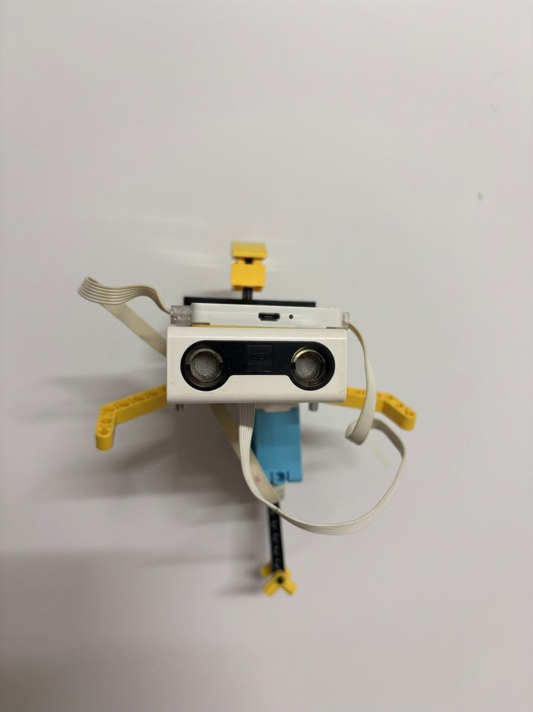

For this biomimicry project, I studied the dolphin as a model for efficient movement in water. Dolphins have a streamlined body, flexible tail, and controlled motion that helps them reduce drag and move with speed and efficiency.
I used these ideas to create a design inspired by the dolphin's form and function. The goal was to apply smooth curves, balance, and stability to a structure that could perform well in a real-world setting.